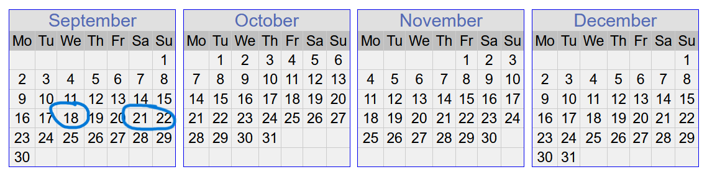
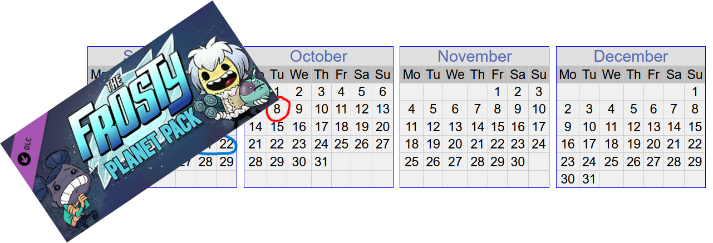
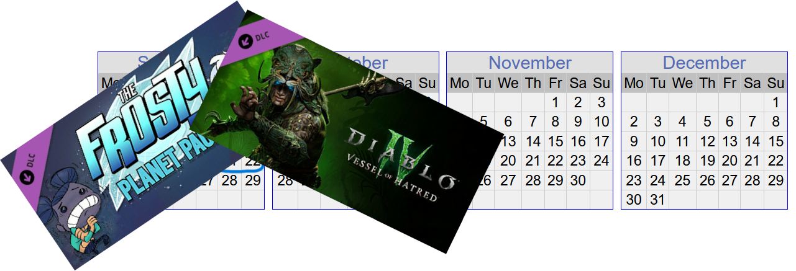
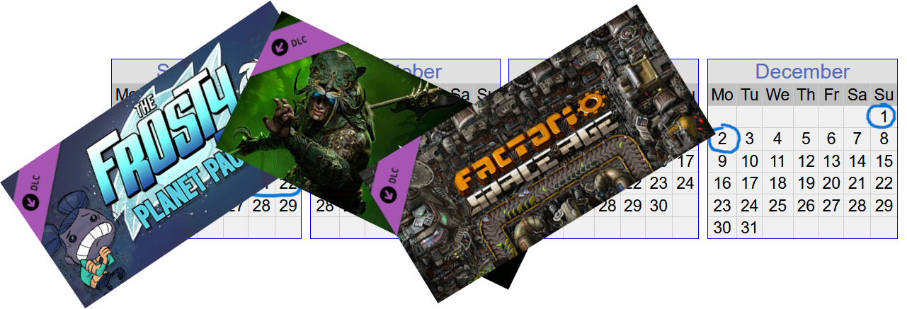
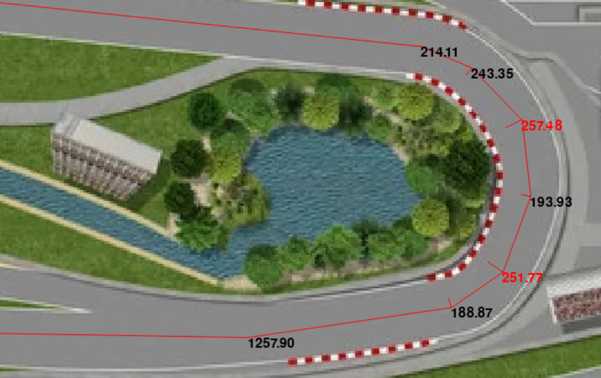
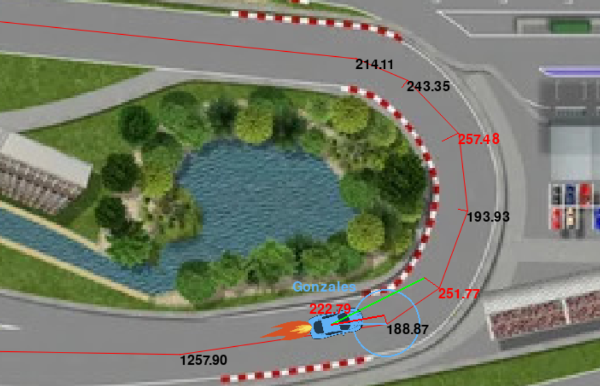

Gonzales
Brawn over brains
Timeline




High level
- at startup: analyse track
- every tick:
self._goFast()self._thatWay()
Track analysis
- determine apexes
- cut corners in apexes
- by
CORNER_CUT_FACTOR
- by
- cut corners in adjacent waypoints
- by half of that
Track analysis
- determine speed limits
- waypoint sharpness = distance to closest neighbour / angle
SPEED_LIMIT_FACTOR* sharpness +SPEED_LIMIT_OFFSET
Track analysis

Going fast
- determine distance to stop
- using
EFFECTIVE_DECELERATION
- using
- check speed limit of waypoints in that distance
- determine distance to brake for that limit
- if so, brake!
- else, go fast!
Going in the right direction
- check if the next waypoint is ‘guaranteed’
- using
STEER_DISTANCE_LIMITandSTEER_ANGLE_LIMIT - if so, start steering to waypoint after that
- using
- calculate steering output based on angle
- using
STEERING_FACTOR
- using
Racing

Parameters
CORNER_CUT_FACTORSPEED_LIMIT_FACTORSPEED_LIMIT_OFFSETEFFECTIVE_DECELERATIONSTEER_DISTANCE_LIMITSTEER_ANGLE_LIMITSTEERING_FACTOR
Brawn over brains
- maybe not the most sophistated bot
- instead optimize parameters using
brute_force.py
brute_force.py
- provide range of values for each parameter
- runs the bot in multiple races in parallel
- for each track
- for each cartesian product of the ranges
- shows best parameter sets for each track
- and parameter sets that improve the performance the most